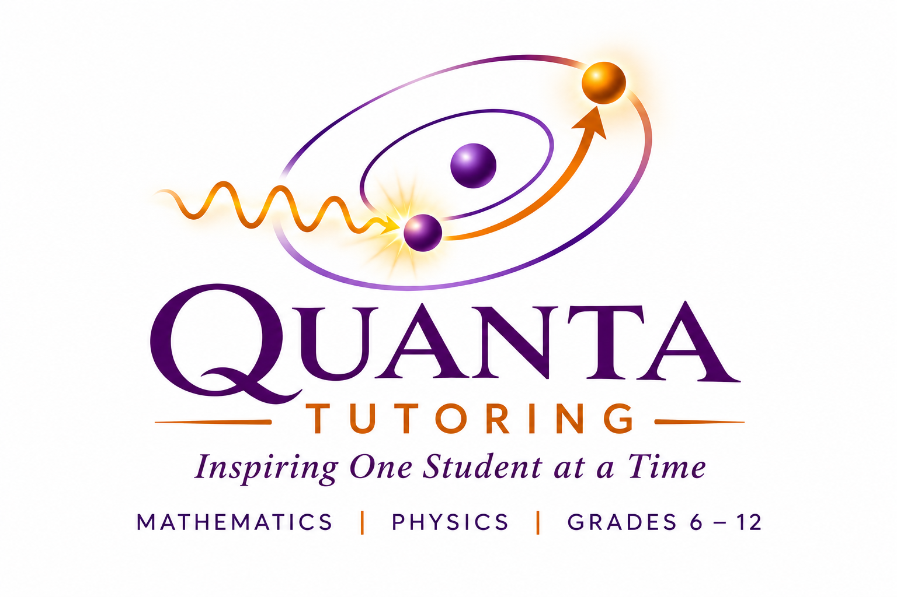

Ask the question
Students are encouraged to be curious, challenge assumptions, and explore the reasoning behind an answer.

Live, interactive tutoring that guides students to ask better questions, reason deeply, and discover insights for themselves.
Start a conversationAt Quanta Tutoring, teaching is a conversation, not a lecture. Through inquiry, reflection, and realization, we guide students with thoughtful questions and active problem-solving until they connect the dots and make understanding their own.
Beyond mathematical proficiency, this approach nurtures independent thinking, empathy, communication, and the confidence to guide others. Students learn to question assumptions, appreciate different perspectives, and explain their reasoning clearly. Over time, these habits can extend far beyond the classroom.
Students are encouraged to be curious, challenge assumptions, and explore the reasoning behind an answer.
Discussion and shared questions help students connect ideas. Sometimes, a question worth pondering extends beyond class.
The goal is more than finding an answer: it is connecting the dots and understanding why the answer makes sense.
From foundational algebra to advanced calculus, we build conceptual clarity, mathematical intuition, and confidence—rather than relying on memorization.
Pre-Algebra · Algebra I & II · Geometry · Precalculus · AP Calculus AB & BC · AP Statistics
AP Physics 1 & 2 · AP Physics C: Mechanics · AP Physics C: Electricity & Magnetism · IB Physics (SL & HL, two-year program)
Interactive sessions with real-time equations, diagrams, screen sharing, and collaborative discussion. Most work happens together during class; no routine tests or assigned homework.
The name Quanta comes from a simple idea in physics: when an electron absorbs a photon of the right energy, it can transition to an excited state.
Teaching can be that spark. The right question, at the right moment, can help a student reach a new level of understanding.
My teaching journey began in 10th grade in India, long before my career in technology. A fascination with Physics—and Mathematics as its language—has remained with me ever since.
For more than a decade, I've taught students in the Dallas area, bringing a foundation-focused approach shaped by my education in India and the United States.
I value the moment when students discover an insight themselves. That is the heart of Quanta Tutoring.
We offer personalized Mathematics tutoring for grades 6–12, including Pre-Algebra, Algebra I and II, Geometry, Precalculus, AP Calculus AB and BC, and AP Statistics. Physics subjects include AP Physics 1 and 2, AP Physics C (Mechanics and Electricity & Magnetism), and IB Physics SL and HL.
Our approach is built around Inquiry, Reflection, and Realization. Students explore why a solution works through questions, discussion, and active problem-solving rather than memorizing procedures.
Yes. Sessions are live and interactive online, with real-time equations, diagrams, screen sharing, and collaborative discussion.
Yes. AP Statistics is one of our Mathematics subjects, alongside AP Calculus AB and BC and other grade 6–12 courses.
Contact us to discuss the student's course, learning goals, and availability. We can then arrange an introductory demonstration session.
Sessions are arranged directly based on learning goals and availability. Contact us for current fees and scheduling details.
Parent testimonials will appear here once submitted, approved, and published.
Interested in Mathematics or Physics tutoring? Reach out to discuss your student's learning goals and availability.
Google Voice: (469) 619-7258
WhatsApp username: @rajunn